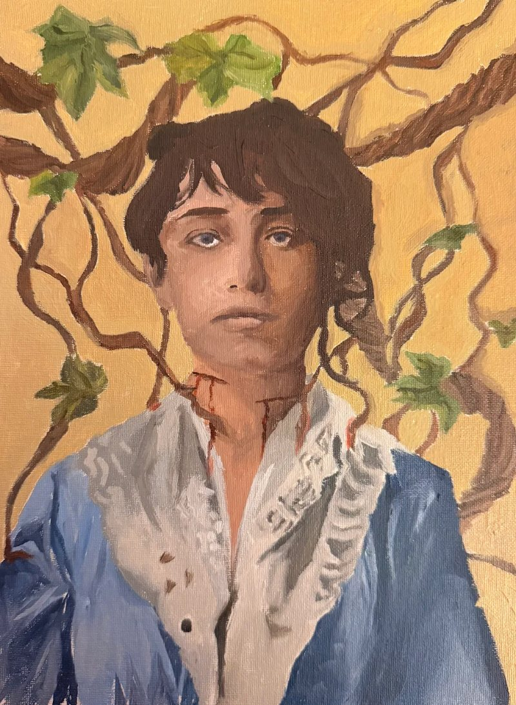
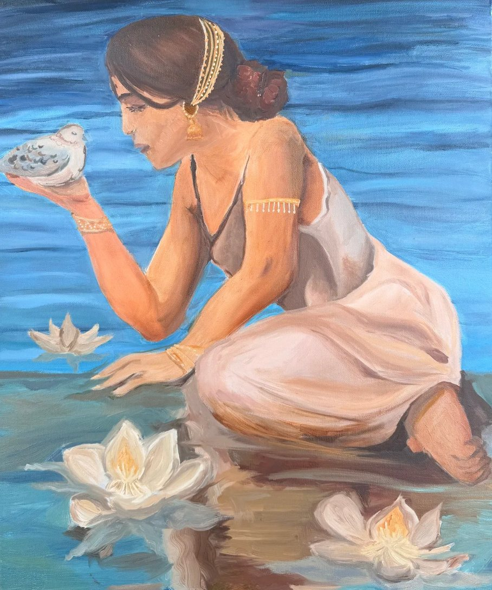
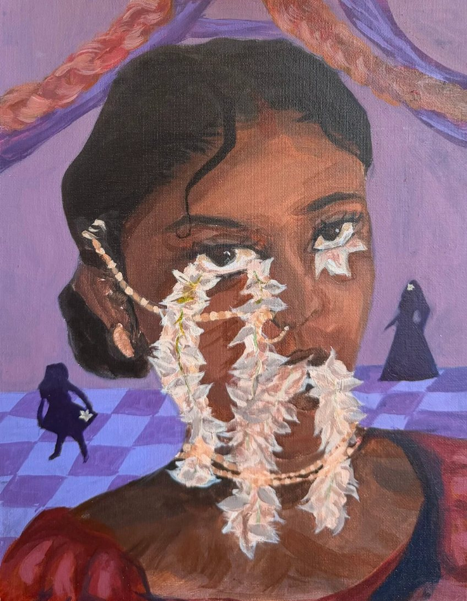
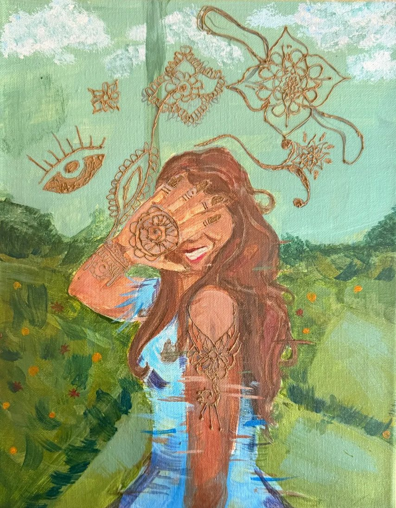
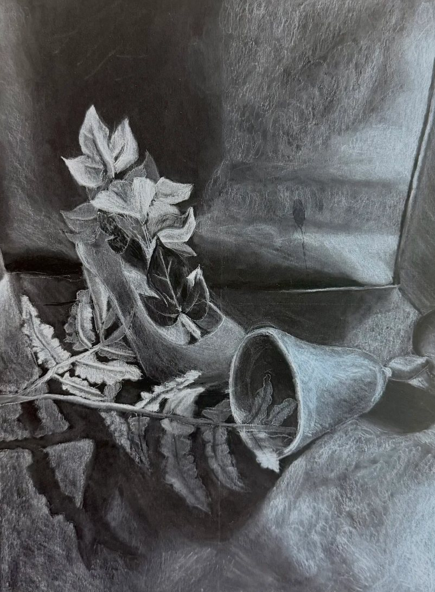
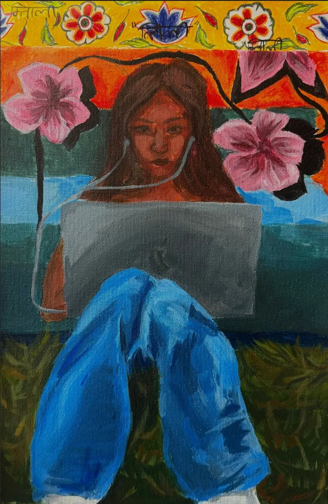
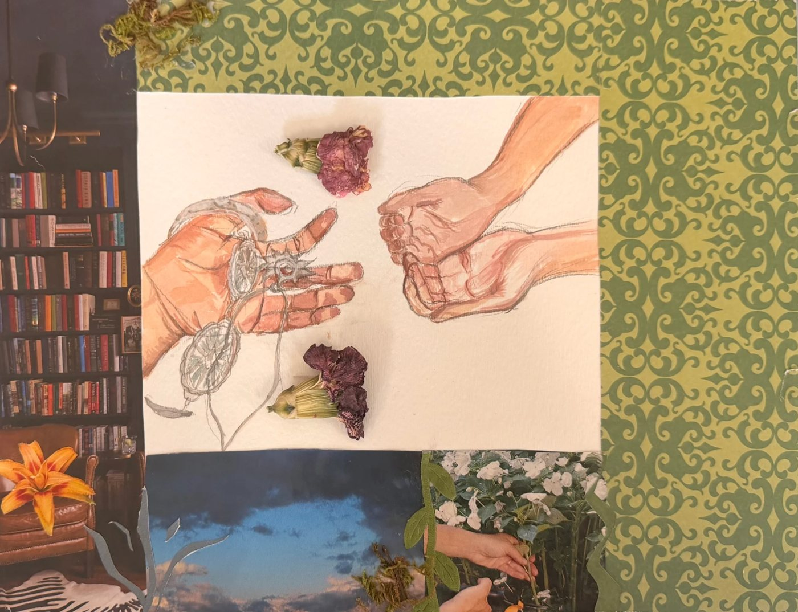
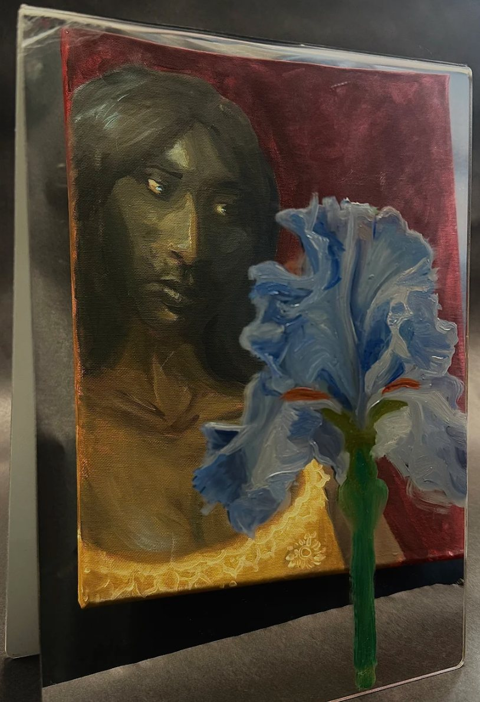
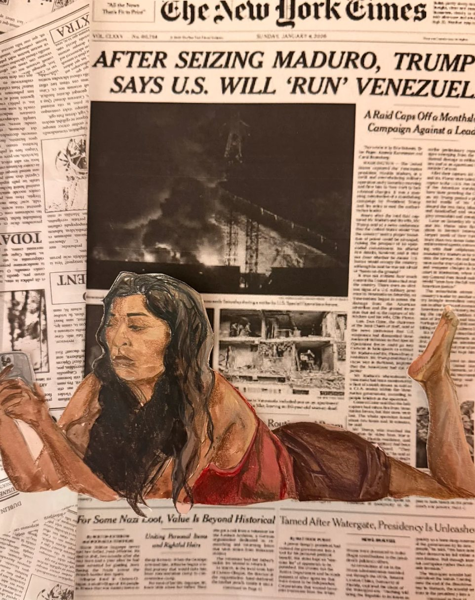

Art Portfolio
Selected works
Around a hundred paintings so far — originals and master studies in acrylic, oil and digital. Work has been exhibited at the Halle Center in Apex and painted on commission.


Tangled in Talent


Singing with the Mourning Doves


The Problem of Pungence


Futile Appreciation


Crime Scene


“मिताली”


A Mother’s Regret


Iris


Laying Down
Interested in a commission? Get in touch to ask about one.